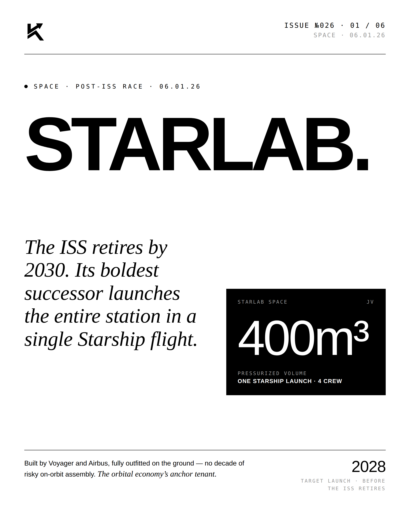
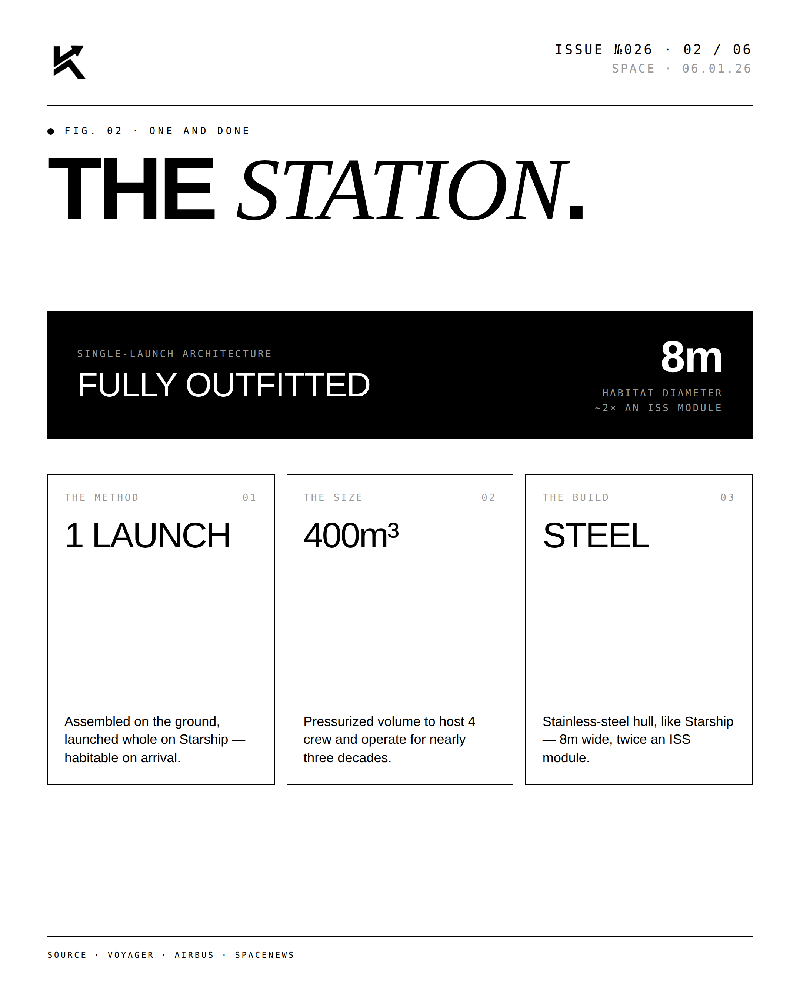
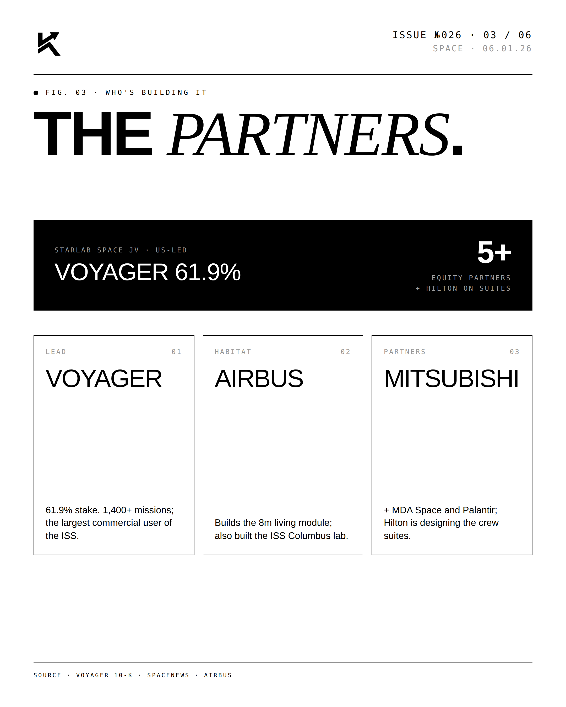
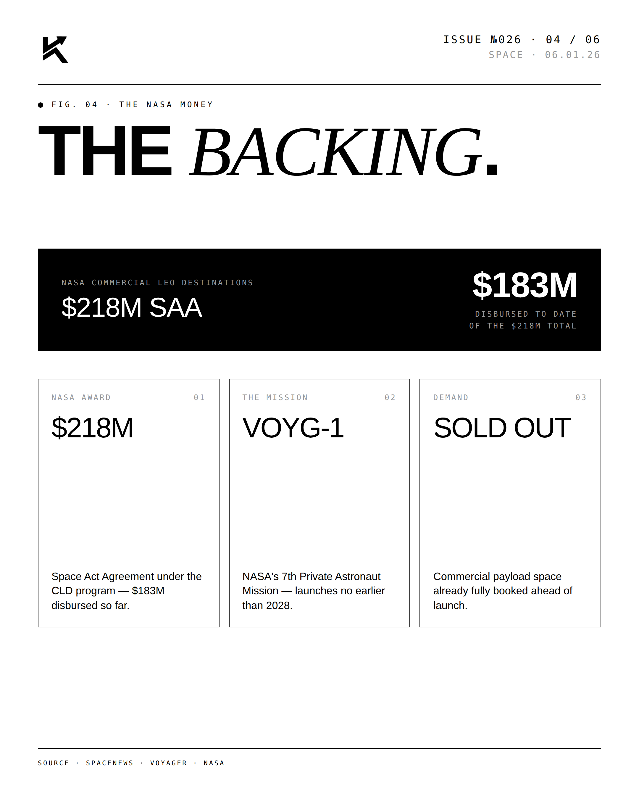
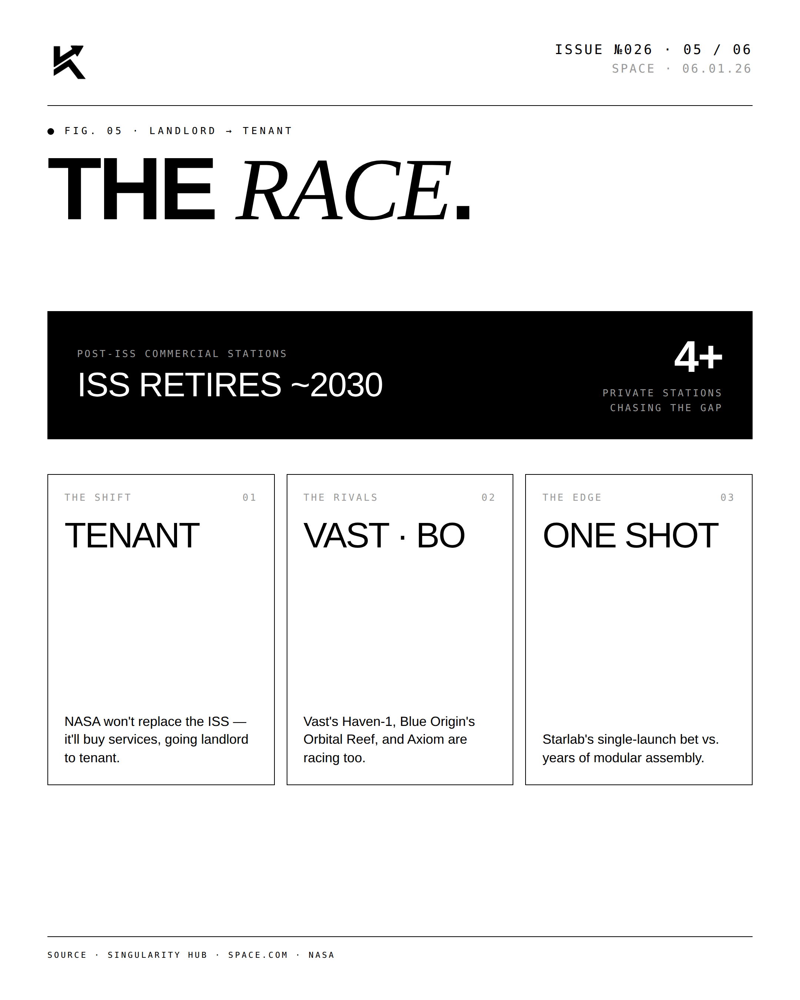
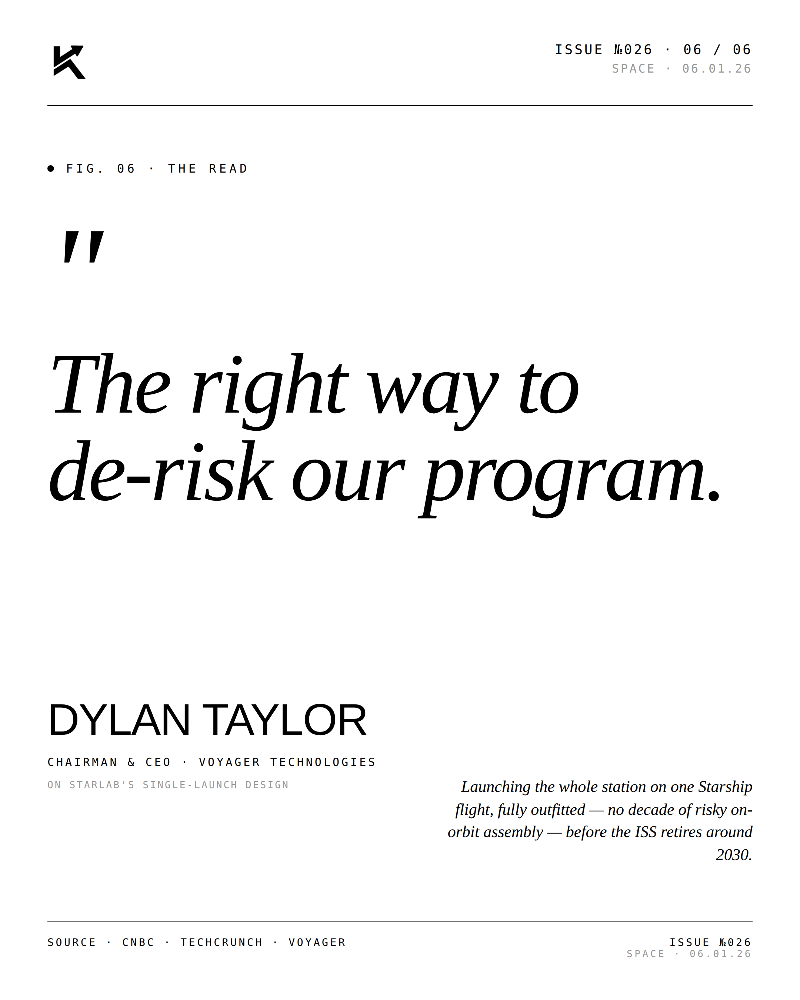

SPACE · POST-ISS SUCCESSOR · 06.01.26
Starlab.
The ISS retires by 2030. Its boldest successor launches the entire station in a single Starship flight.

The Lead.
Multi-decade assembly is replaced by single-launch deployment. Starship is the enabler. Starlab is the architecture.




"The right way to
de-risk our program."DYLAN TAYLORCHAIRMAN & CEO · VOYAGER TECHNOLOGIES · On launching Starlab on Starship · June 1, 2026
